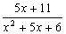
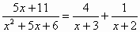
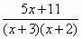
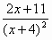
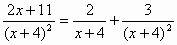

部分分式(I)
程式可以將一個分式(分母為二次多項式ax²+bx+c及分子為一次多項式Ax+B)分解為二個分母為一次多項式的分式。 第二個程式更可計算分母為(x+a)(x+b)的形式。另外若果輸入數據為整數(或分數)及答案為有理數時，答案會以分數形式表示，建議將計數機預先設定為假分數形式表示(按六次 Mode，再按 1 2 EXE )。
程式編寫日期: 2006年2月10日 最新更新日期: 2008年2月14日
第一個程式 (85 bytes，使用記憶為A, B, C, X及Y)
?→A: ?→B: ?→C: ?→X: ?→Y: B2 - 4AC:
(B + √Ans)┘(2A→C◢ B┘A - Ans→B◢
B≠C => A(C - B→A => (XC - Y)┘A◢
B=C => X┘A◢ (Y - XB)┘A
第二個程式 (98 bytes，可同時計算分母為(x+a)(x+b)形式，使用記憶為A, B, C, D, X及Y)
?→A: ?→B: ?→C: ?→X: ?→Y:
A => (B - √(B² - 4AC) )┘(2A→C:
A => B┘A - C→B◢ A => C◢ A=0 => 1→A:
B≠C→D => A(B - C→A:
(XB^D - YD)┘A◢ (Y - XC)┘A
例題1: 將下列分式化為部分分式。

按 Prog 1 再按 1 EXE 5 EXE 6 EXE (先輸入分母)
5 EXE 11 EXE (顯示第一個分式分母為3) EXE (顯示第二個分式分母為2)
EXE (顯示第一個分式分子為4) EXE (顯示第二個分式分子為1)
所以

例題2: 將下列分式化為部分分式。

按 Prog 1 再按 1 EXE 8 EXE 16 EXE (先輸入分母)
2 EXE 11 EXE (顯示第一個分式分母為4)
EXE (顯示第二個分式分母為4，由於數值相同表示原式分母為完全平方)
EXE (顯示第一個分式分子為2) EXE (顯示第二個分式分子為3)
所以

例題3: 將下列分式化為部分分式。

只適用於第二個程式
按 Prog 1 再按 0 EXE (0表示分母(x+a)(x+b)形式)
3 EXE 2 EXE (先輸入分母)
5 EXE 11 EXE (顯示第一個分式分子為4) EXE (顯示第二個分式分子為1)
所以

例題4: 將下列分式化為部分分式。

只適用於第二個程式
按 Prog 1 再按 0 EXE (0表示分母(x+a)(x+b)形式)
4 EXE 4 EXE (先輸入分母，相同數值表示分母為二次式)
2 EXE 11 EXE (顯示第一個分式分母為4) )
EXE (顯示第一個分式分子為2) EXE (顯示第二個分式分子為3)
所以

註1: 若果分母因子不是 (x+a)(x+b)形式，要自行轉化為合適形式輸入，例如: (3x+4) 可轉化為 3(x+4/3)輸入即可。
註2: 若果不用計算分母為ax²+bx+c形式可以使用以下附錄程式，程式會較為簡短。
附錄程式 (42 bytes)
?→A: ?→B: ?→C: ?→D:
A=B => C◢ (D-CA)┘(B - A+ (B=A◢
C - Ans
附錄程式例題1: 將下列分式化為部分分式。
按 Prog 1 再按 3 EXE 2 EXE (先輸入分母)
5 EXE 11 EXE (顯示第一個分式分子為4) EXE (顯示第二個分式分子為1)
所以

附錄程式例題2: 將下列分式化為部分分式。
按 Prog 1 再按 4 EXE 4 EXE (先輸入分母，相同數值表示分母為二次式)
2 EXE 11 EXE (顯示第一個分式分母為4) )
EXE (顯示第一個分式分子為2) EXE (顯示第二個分式分子為3)
所以